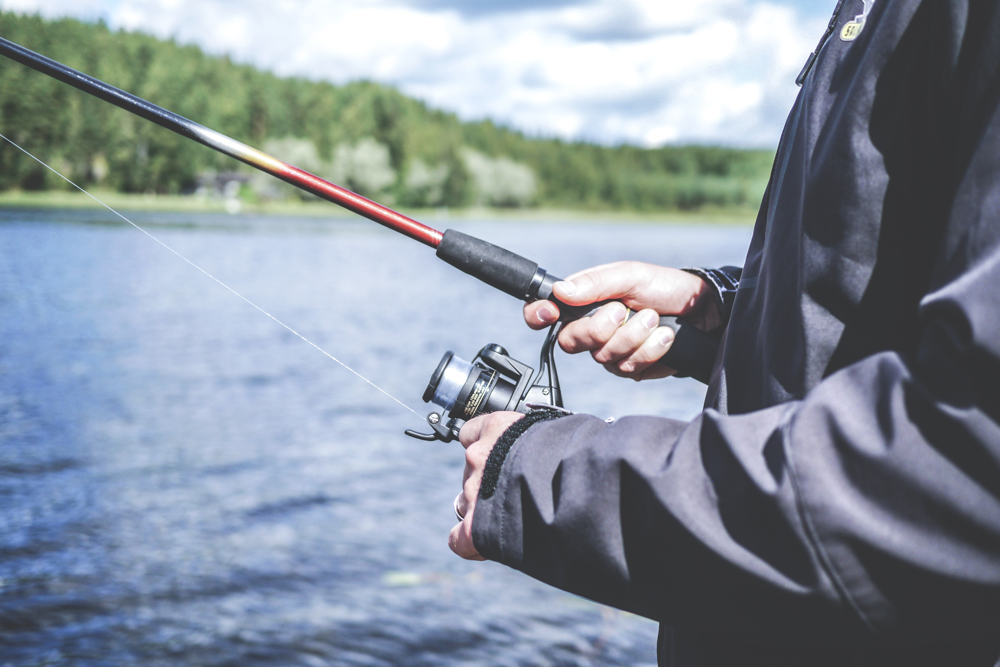
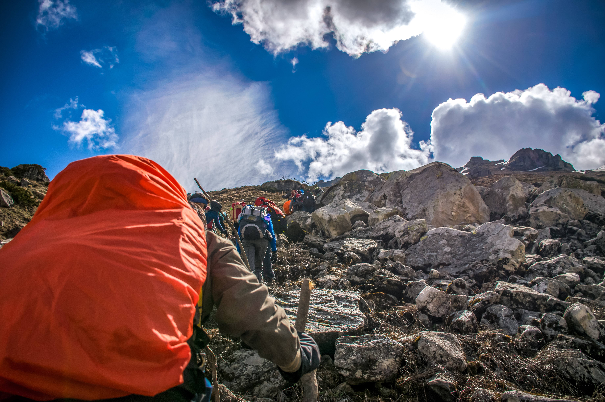
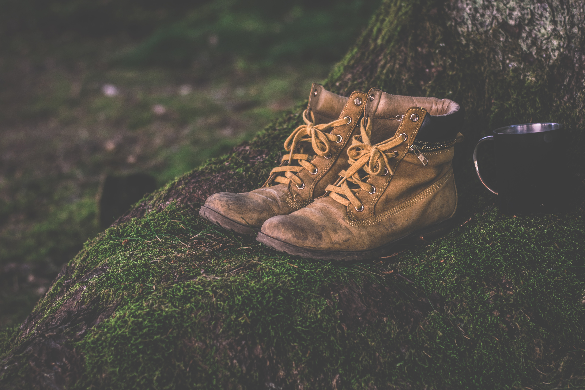

FISHING
Freshwater fishing spots in Cape Town include a variety of lakes,rivers and dams including peaceful fly fishing. It's often a good choice for beginners as well as anglers found in freshwater locations includes, carp, trout and bass. Some of the freshwater fishing spots in Cape Town that you can consider.
LIESBEEK RIVER
available fish:
Carp and sharp tooth catfish.
BERG RIVER
available fish:
Rainbow trout, brown trout, smallmouth bass, crap, mozambique tilapia, sharp tooth catfish and smallmouth bass.
THEEWATERSKLOOF DAM
available fish:
Largemouth bass, carp and sharp tooth catfish.
LAKENVLEI
available fish:
Rainbow trout

ROCK CLIMBING
THE CAPE ROUTES APOSTLES
The icons od Camps Bay, there is more climbing to be done here than Lion's Head and Table Mountain combined, but with no cable car. Approaches starting at 45 minutes and west facing these buttresses get less traffic than they should. If you are looking to escape the crowds od Table Mountain and Lions, meander down the pipe track and prepare for many adventures.
LION'S HEAD
There are two crags on Lion's Head, one is 'Granite' and the other is 'Sandstone'. The Sandstone climbing is on the cocentic rings of rock at the top of the mountain (the Lion's Head part), while the Granite climbing is on the huge huguenot slab, a short distance above the houses of Fresnaye/Bantry Bay and facing the sea and Robben Island. There are some single pitch sport routes on the Granite, but mostly they are multi-pitch trad routes. climbing on Sandstone is all trad, with a mix if single pitch and multi-ptch routes, depending on the band, ledges, vegetation and rock quality. The walk-in to the Granite is about 15 minutes and the Sandstone is about 25 minutes.
BAINS KLOOF
From Wellington one has to drive over the pass and some way down the other side towards Woleseley. The best routes are on the imposing crag that is on the south side of the valley. Park at the appropriate siding on the pass and descend to the river. A long walk up to base of the crag leads on into a nice cave.
TOWERKOP
Towerkop stands on a few km west of Ladysmith(Cape) on the Laingsburg road. Towerkop will get more winter rain. The caves seep badly a few days after heavy rain. Summers are hot in the sun, but quite cool in the shade. More than 100 traditional routes, there are no bolts at all. This is not sport area & no bolts what so ever should be placed. This is a situation where there are bad men who will do something. There are numerous sport lines at Waterkloof, Outshoorn and Montagu, all not far apart.

CAMPING
SECRET FALLS
This campsite has it's own private spring-water swimming pools, so there's loads of dipping to be done. Expect and abundance of fynbos, hiking trails, waterfalls and rock-pools and if your adventurous enough, go zipling at nearby ceres.
DRIEHOEK GUEST FARM
Explore the cederberg on one of the farm's many walking trails, passing by rock formations, waterfalls and natural pools where you can enjoy a refrershing dip.
WOLFKOP CAMPING VILLAGES
The Citrusal valley is a favoured destination for outdoor enthusiasts, with numerous hiking and mountain-biking trails that can be found at the campsite or on surrounding farms. Canoes can be hired at Wolfkop for use in the rivers and dams spread throughout Citrusdal and theres a river at the biesievlak campsite where fishing is allowed.
DWARSBERG TROUT HIDEAWAY
Outdoor activities include trout-fishing, bird-watching, mountain-biking and hiking through waterfalls. Feel like a break from your tent? There is plenty of wine tasting in the region.

HIKING
SKELETON GORGE
Known for it's popularity amoung loclas and tourists, Skeleton Gorge is a scenic trek not rivalled by many. Ideal in dry conditions, this hike is great for both thr seasoned and novice hikers. During the summer months you'll be able to get some shade along the afromontane forest nearly all the way up Skeleton Gorge. Bear in mind that this hike can be quite strenous so be prepared to really work those muscles, and take the necessary safety precuations.
Difficulty:
Monderate
LION'S HEAD
This short summit offers panoramic views of 'CPT' and unbeatable sunsets. It's a popular route to do on nights where there's a full moon. If you're relatively fit, you'll find yourself at the top quite quickly, which is why it's such a popular after-work hike. There's a little bit of climbing involved, but there are handholds and chains to help you on your way up and down. You can also take the roundabout way, which skips the climbing part if you are walking with small children or dogs.
Difficulty:
Moderate
SUICED GORGE
Not one for the fainthearted, this is an extreme hike with very high jumps down the river into the pools below. We recommend doing this with a guide as it can be dangerous.
Difficulty:
Difficult
KROM RIVER
Save this one for summer as the path leads up a river to two spectacular rock pools, which can be icy even when it's warm. The walk itself isn't too long, so you can spend plenty of time swimming in the mountain pools.
Difficulty:
Difficult